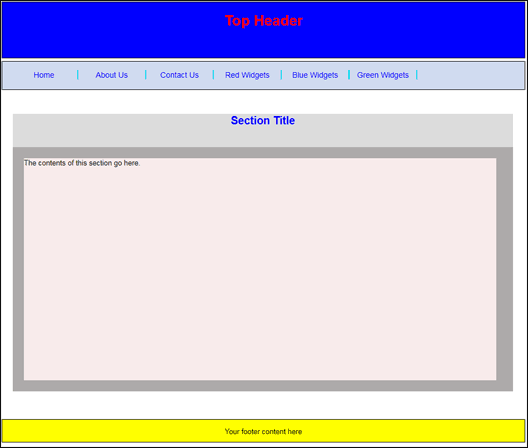

Styling a one column layout
<< Continued from previous section
Rather than you having to type out all the CSS for this template, have a look in the extra_files/css folder that came with this course. (If you haven't got the extra files yet, the download location is here, under the heading Web Design - New Course : Download the Extra Files needed for this course (You don't need the downloads for the old course.)
Locate the file called one_col_style.css. Copy it to your own CSS folder. Then, in the HEAD section of your HTML, insert the following line:
<LINK REL=Stylesheet TYPE ="text/css" HREF="../css/one_col_style.css">
This is, of course, a link to the stylesheet we're going to be using.
Once you have inserted the link, save your work and view the results in your browser. The plain HTML page should transform into this: (The colours we have chosen are simply so you can see the various sections - they are a bit garish!)

If it's still a plain HTML page, make sure your HREF reference is correct in the LINK code above. Did you copy our file to the correct location?
We'll now go through the CSS and see how it works. So open up the CSS code and take a look at it.
The first thing to examine is this:
header, footer, section, nav, article {
display: block;
}
We're setting up a rule that will apply to all five items in out HTML code. Notice how all five items are separated by commas. You can do this kind of thing for other CSS selectors as well. For example, if you wanted to reset the CSS to browser defaults, you can do this:
body, h1, h2, h3, p, ul, li, {
border:0;
margin:0;
padding:0;
}
The reason you'd want to reset like this is because different browser have different default values. You'd then set your own values that override the defaults. For more information on resetting, see these pages:
http://meyerweb.com/eric/thoughts/2007/04/18/reset-reasoning/
http://meyerweb.com/eric/tools/css/reset/
http://html5doctor.com/html-5-reset-stylesheet/
But in our code, we're just making sure that older browsers deal with our newer HTML5 elements correctly.
Next in our CSS code, we set up some general rules for everything between the two BODY tags:
BODY {
margin: 0 auto;
width: 940px;
font-family: Arial, Helvetica, sans-serif;
font-size: 13px;
}
The first line deals with the margins, setting them to zero, Notice the auto part, though. What this does is to centre everything on the page.
Exercise
Delete auto from your CSS code in the BODY selector. Save and refresh the page
in your browser. Put auto back in when you're finished.
We're doing three other things for the BODY tag: setting a width of 940 pixels, setting the font family, and setting the font size. Play around with these values and see what happens.
Fixed Sizing versus Liquid Sizing
We've specified a fixed size of 940 pixels in our code. There is a problem with this, however. Suppose you want your site to be viewed not only on a monitor attached to a computer but also on a mobile phone. The fixed size means it will be too wide on the phone. The alternative is fluid sizing.
With fluid sizing, the values are not in pixels but in percentages. For example, instead of specifying a value of 940 pixels, we could have written something like 80%. If you are targeting more than one platform then go for percentages for your values, especially for widths (heights can stay on pixels, though).
In the next lesson, we'll look at the styling for the HTML5 tags.